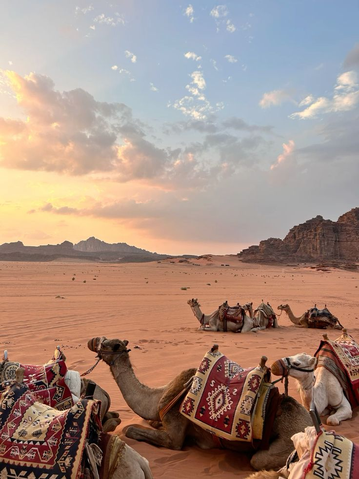
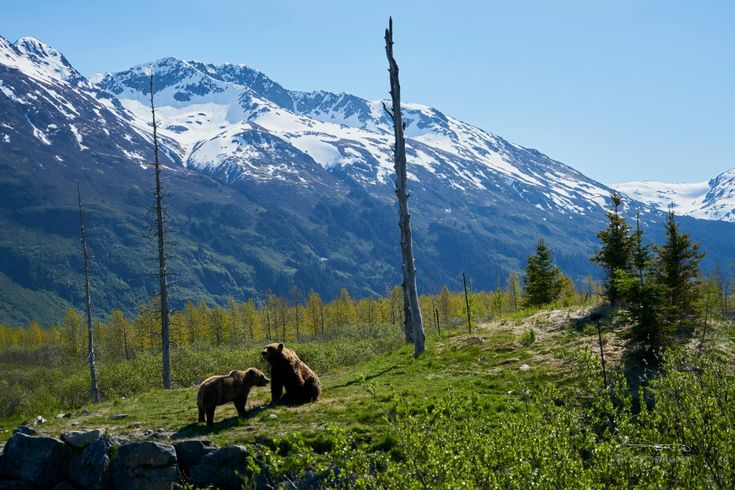
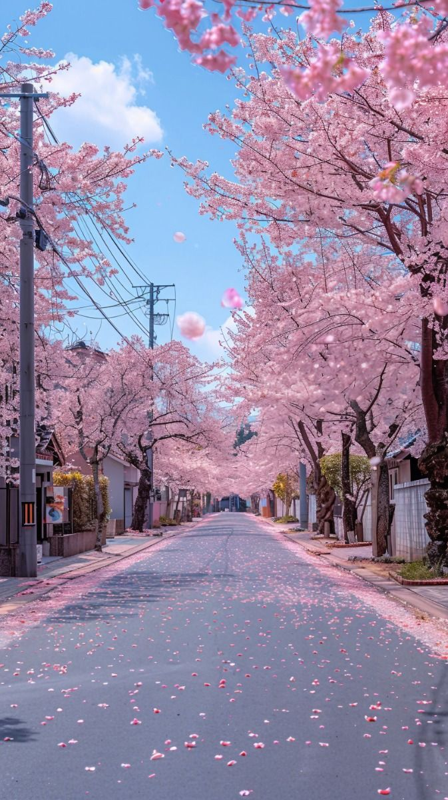

The Magic of Morocco

Embark on a mesmerizing journey through the vibrant culture and stunning landscapes of Morocco. From
navigating the bustling souks of Marrakech to traversing the majestic dunes of the Sahara on
camelback, this trip offers an authentic taste of Moroccan life. Highlights include exploring the
historic palaces of Marrakech, hiking through the Atlas Mountains and experiencing traditional
Berber hospitality, and spending starlit nights in the Sahara, immersed in cultural performances.
An Alaskan Odyssey

Dive into the wild beauty of Alaska with an adventure that spans its icy waters and rugged mountains.
This journey is a celebration of nature, featuring glacier cruises in the Kenai Fjords to witness
spectacular ice calvings and marine wildlife, flightseeing tours over Denali the tallest peak in
North America, and encounters with Alaska’s rich native cultures. Experience the remote wilderness
of Alaska and its breathtaking landscapes, offering once-in-a-lifetime wildlife sightings and
cultural insights.
Cultural Tapestry of Japan

Explore the harmonious blend of tradition and modernity in Japan. From the tranquil temples and
vibrant cherry blossoms of Kyoto to the bustling, futuristic streets of Tokyo, this trip covers the
cultural spectrums of one of the world’s most fascinating countries. Key experiences include walking
through the historic temples and serene gardens of Kyoto, embracing the energetic pace of life in
Tokyo, and reveling in the beauty of cherry blossom season, a symbol of transient beauty.